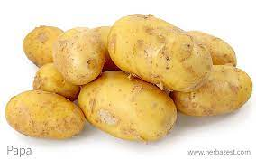
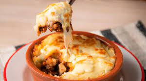

Daniel R.Morales
Henry
tarea de HTML / CSS
El pastel de papa es un plato que consiste en una capa de papas sobre una capa de carne picada
sazonada, con o sin base de papa debajo
Encuentre aquí el mejor pastel de papas
Papa

Queso
